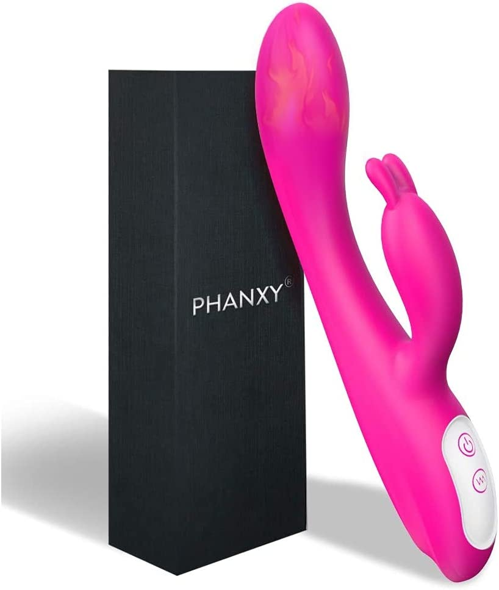
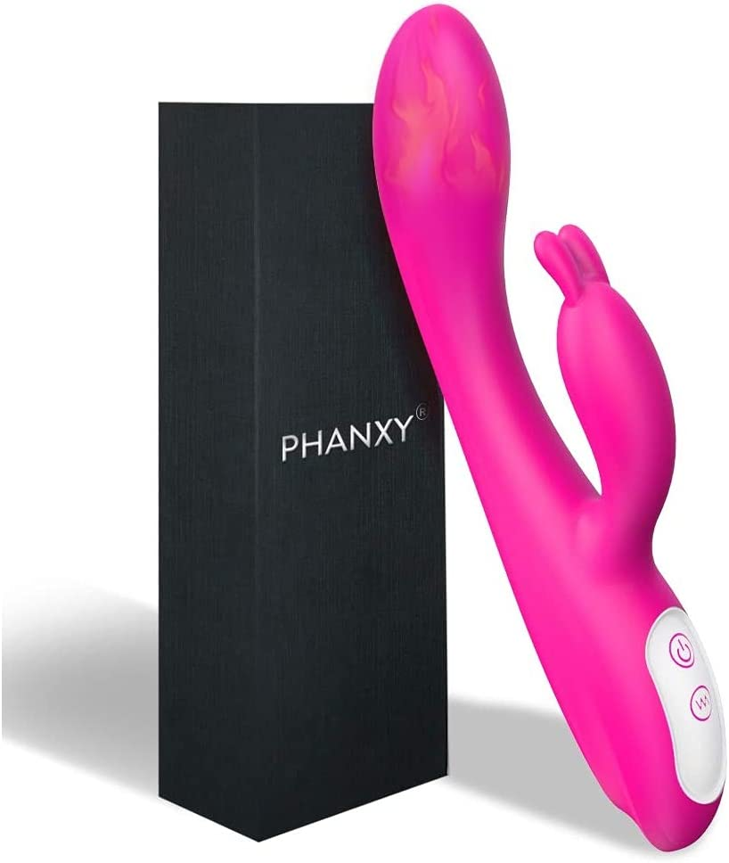

Are you ready to learn how to give the best blow jobs of your life? Look no further, because you've come to the right place!
In the past, giving oral sex was probably pretty straightforward. Women didn't stress about it too much, as all they had to do was bob their heads up and down a few times and maybe follow some direction from their partner. But these days, it's not that simple anymore. With the proliferation of sexually explicit content and the abundance of information about different techniques and preferences, it's important for women to know what they're doing when it comes to oral sex. Unfortunately, it seems like we ladies are still a bit uncomfortable talking about sex explicitly, which makes it hard to get reliable information about oral sex. I mean, even when my best friend asks me for sex advice, I have no problem dishing it out. But when she asked me for quick tips on how to give head, I found myself stumbling over my words and blushing. It's just such an intimate act that we tend to keep the details to ourselves, rather than shouting them from the rooftops for the benefit of our fellow ladies. But let's change that, shall we? It's time to break the taboo and start talking openly and honestly about oral sex.
Now, I know what you might be thinking. "Oh no, not me! I could never give a blow job. It's too intimidating/scary/gross/etc." Trust me, I get it. I was a late bloomer when it came to sex (perhaps it was the good Catholic girl thing), and I didn't even have any sort of sex until I was out of high school. But let me tell you, giving a blow job is not as scary or intimidating as it seems. With a little practice and some helpful tips, you'll be a blow-job pro in no time!
1. Don't forget the basics
Okay, so you're ready to give a blow job, but where do you start? The first thing to consider is your position. Depending on the setting (living room, bedroom, alleyway, etc.), you might be sitting, standing, lying beside him, or kneeling in front of him. Take the time to get yourself comfortable, because you'll be spending some time down there if you want to get it right. If you need to adjust your position, try to keep touching him in some way so he knows you're not going anywhere. Use your hands to stroke his penis or just kiss or touch whatever is close to you. Usually, when you get down there and you're getting ready to put him in your mouth, he's already hard. But if he's not, don't panic. There have been times when I've had guys who were only semi-hard or even completely flaccid (especially if I'm waking them up in the morning with this technique). As soon as you start moving your mouth over him, he'll perk up, and you'll know you're on the right track.
Once you're ready to start, make sure to get his dick wet with your mouth first. Lick it from the base to the tip, and then put the entire thing in your mouth, leading it towards the roof of your mouth, not your tongue. This will help you avoid your gag reflex. Even if it's only for a quick second, they want to feel everything in your mouth, which should be warm and wet. If he's well-endowed, this can be more difficult, especially if you've been drinking and regretting that last shot of tequila. Finally, close your lips around it while you're sliding it out of your mouth, and take your tongue and run it along the ridged tip of his penis. You can use both hands and your mouth if he's big, or one hand and your mouth while softly rubbing his balls in your other hand.
2.Don't forget about the balls
Ah, the oft-neglected scrotum. This sensitive area is often overlooked during oral sex, but it can be a major source of pleasure for men. So if you want to take your blow job skills to the next level, it's time to learn how to lick and massage your partner's balls. First things first, make sure your partner is comfortable with you touching and stimulating their scrotum. Not everyone is into it, so it's important to communicate and make sure you're both on the same page. Once you've gotten the green light, start by gently licking the scrotum. You can use the flat part of your tongue to lick the entire area, or focus on specific areas like the perineum or the base of the shaft. You can also try using your lips to suck on the balls, being careful not to apply too much pressure. In addition to licking, you can also try massaging the balls. This can be a great way to add variety and increase pleasure for your partner. To do this, gently cup the balls in your hand and massage them with your fingers. You can use circular motions, or try applying different pressures and strokes. Just be sure to be gentle and pay attention to your partner's reactions. It's also a good idea to mix things up and try different techniques. You can try using your tongue and fingers at the same time, or use toys like a vibrator or a ball stretcher to add some extra stimulation.
3. Genuinely enjoy giving brain
All sex should be about your pleasure, whether it's dominant or submissive. The key to good sex is doing what feels good for you, and for some people that means letting go of control. So don't think of giving a blow job as something you're doing solely for your partner's benefit. If you see it that way, you won't enjoy it, and neither will they. Think of it as an opportunity to intimately enjoy their genitals. When they're inside you, you don't get to feel every part of their penis – you don't have the same nerve endings in your anus as you do in your mouth. But when it's in your mouth, you can feel every vein, texture, and throb. So savor the experience and only go for as long as you want. A good blow job is as much about getting what you want as it is for your partner.
4. It's okay to gag
Giving a blow job can be a thrilling experience for both you and your partner, but let's face it – sometimes it can lead to a little bit of gagging. And that's completely okay. First of all, it's important to note that gagging during oral sex is a completely natural and normal response. It's caused by the gag reflex, which is a protective mechanism that prevents us from swallowing foreign objects or substances. The gag reflex is triggered when something touches the back of the throat, the tongue, or the roof of the mouth. So if you find yourself gagging while giving a blow job, don't panic – it's a normal response. And trust us, your partner probably isn't even noticing it as much as you are. That being said, there are a few things you can do to minimize gagging while giving oral sex. Practice deep breathing. Taking slow, deep breaths can help relax your throat and minimize the gag reflex. Try using your hands as well as your mouth. Alternating between using your mouth and hands can help break up the sensation and make it feel less overwhelming. Experiment with different techniques. Some people find that using a circular motion or a back and forth motion is less likely to trigger the gag reflex. Use a flavored lubricant. Adding a flavored lubricant can help mask the taste and make it more enjoyable for you. Take breaks. If you're finding it difficult to continue without gagging, it's perfectly okay to take a break and catch your breath. So there you have it – a few tips on how to minimize gagging while giving a blow job. Remember, it's a completely normal response, and it's nothing to be ashamed of. Just take it slow, relax, and have fun! This content may violate our content policy. If you believe this to be in error, please submit your feedback — your input will aid our research in this area.
5. Hands: Two, One, or None
The age-old question: should you use one hand, two or zero while giving a blow job? Well, the answer really depends on your personal preference and what feels most comfortable for you. Using two hands can be a great way to add variety to your oral sex routine and provide more stimulation for your partner. You can use one hand to grip the base of the shaft and move your mouth up and down, while using the other hand to stroke the shaft or play with the balls. This can be a great way to mix things up and keep your partner guessing. On the other hand (pun intended), using one hand can also be a great option, especially if you're trying to focus on other areas like the head of the penis or the balls. Using one hand can allow you to be more precise and targeted in your touch, and it can also be a good way to add some extra intimacy to the experience. Ultimately, the choice is up to you and what feels most comfortable and pleasurable for both you and your partner. You can try using one hand or two and see which you prefer. You can also mix things up and try using one hand at times and two hands at other times. So don't be afraid to experiment and find out what works best for you. The most important thing is to have fun and communicate with your partner to find out what they like.
6. Dress Up:
Never ever underestimate the power of a see-through teddy to get your guy standing tall. Whether you are a married woman or you have started dating recently, it is crucial that you get the basics right. This means you should invest in sexy lingerie, because you might never know when you require these. A hot piece of lingerie can reignite the flames of love and romance in your relationship and help establish a lasting connection with one another. So plan nights out with your husband or potential partner and surprise him with appealing lingerie to let him know that the effort has been made for him.
Here is the amazon link of the best laungerie
https://amzn.to/3WImm9R
7. He wants you to be submissive
In power exchange, the person receiving oral sex has the position of power. The person giving oral sex has a submissive role. This dynamic can be incredibly hot, and there are a few ways you can increase the power exchange and let your partner really take control. One way is to let your partner "fuck your face" – in other words, let them use your mouth as a kind of human masturbation sleeve. There are a variety of positions you can try for this, such as lying on your back with your head hanging off the edge of the bed or kneeling in front of them with your head in their lap. Another way to surrender control is to simply let your partner move your head and control the stroke. This can be intense, objectifying, and even a little degrading – all the things that many skilled submissives love. Of course, it's important to remember that power exchange and BDSM activities should always be consensual and involve clear communication and boundaries. Make sure you discuss and agree on any power exchange or BDSM activities beforehand, and use safewords to communicate if things aren't working for you.
8. Avoid teeth!
Ah, the age-old struggle of giving a blow job without accidentally clacking your teeth against your partner's genitals. It can be a nerve-wracking experience, especially if you're worried about causing pain or discomfort. But fear not – there are a few tips and tricks you can use to avoid teeth during oral sex. First of all, it's important to remember that a little bit of teeth can be a good thing. A gentle nibble or a little bit of tooth grazing can add some extra sensation and pleasure for your partner. Just make sure you're being gentle and communicating with your partner to find out what they like. If you're worried about accidentally biting down too hard, try using your lips and tongue to do most of the work. You can wrap your lips around the shaft of the penis and use your tongue to stimulate the head. This can help reduce the risk of teeth-related mishaps. Another option is to use a dental dam or a condom with a flavored lubricant. This can create a barrier between your teeth and your partner's genitals, and the flavored lubricant can add some extra pleasure for both of you.
9.Use Toys
Incorporate toys and other props into your sexual play. This can add variety and spice to your sex life. Read our article on the best sex toys to spice up your sex life But don't worry if you're short on time, I've included some of them below, their amazon links open by clicking photos :).
 



10. The ultimate thing to make him happyyy!!
There are a few reasons why swallowing after giving a blow job can be a nice way to make your partner happy. First and foremost, many men find it to be a huge turn-on to see their partner swallow their ejaculate. It can be a symbol of intimacy and trust, and it can also be a way to show your partner that you're completely comfortable and relaxed with them. Swallowing also has practical benefits. It can help reduce the risk of sexually transmitted infections, since sperm can carry infections such as HIV. Swallowing can also help prevent the risk of pregnancy, since sperm can live for up to five days in the female reproductive tract. In addition to these practical benefits, swallowing can also be a way to show your partner that you care about their pleasure. It can be a simple gesture that lets them know you're willing to go the extra mile to make them happy. Of course, it's important to remember that swallowing is a personal choice and it's not something you should feel pressured to do. If you're not comfortable swallowing, that's completely okay. You can let your partner know, and you can find other ways to show them how much you care about their pleasure.
So there you have it, a few tips on how to give great blow jobs, you may also want to read our article on how to make your man obsessed with you in bed. Remember, practice makes perfect. And above all, communication is key. Talk to your partner about what they like and don't like, and have fun experimenting and finding out what works for both of you. Happy blow jobbing! Alos, if this helped you, help us keep this website alive by  Buy us a coffee, it's only $2
Buy us a coffee, it's only $2